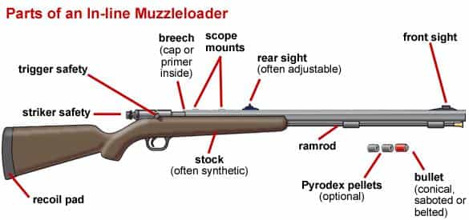
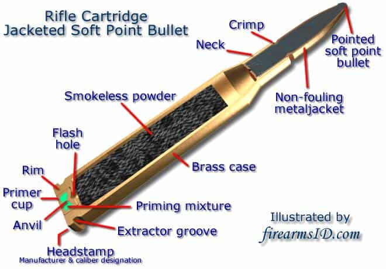
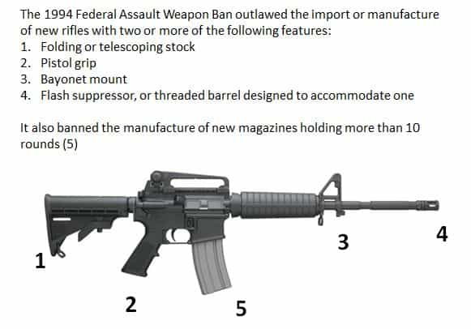

Luke Stranahan is an engineer by trade and an armed patriot by inclination. He writes for Return of Kings as a leisure pursuit and an attempt to do his part to help reverse the slide into moral decrepitude of modern society. Follow him on Twitter.


The rifle has evolved for the past few hundred years. In the first part of this article, we covered important technological milestones that were achieved at points in American history, usually wars. In this second part, we will discuss the various action types available today, cartridges and their nomenclature, and modern rifles and their accessories.
The modern muzzleloader bears a large resemblance to its historical predecessors while having some important differences. Black powder has been largely supplanted by new formulas which are easier to clean, load, and do not leave corrosive fouling. Bullets have been updated with modern sabots to guide them down the barrel, yet not be so hard to load. Lastly, modern muzzleloaders are of an inline ignition design, with a breechplug with a hole separating the percussion cap (or upgraded to an actual cartridge primer) from the powder charge. All of these provide upgrades in power and reliability.

The trapdoor actions and rolling block actions of early blackpowder cartridge rifles are completely obsolete, and not seen in any modern rifle outside a replica.
Although primarily a shotgun and combination gun action, the break action is usable on rifles and represents about the most simple, inexpensive action out there.
Remington 760 pump action rifle.
Also primarily shotgun actions, the pump and lever actions exist in rifles. The reason they are rare is because of the centerfire primer and the spitzer bullet we discussed last time. Pointy bullets in a tubular magazine will put their points right on the primers of the rounds in front of them, and you could develop quite a situation trying to overload a tube mag and pushing hard enough to set one off.
A lever action rifle in .35 Remington (note the round tipped bullets)
Although some tube rifle rounds have pointed polymer tips, most are limited to rimfires like the .22, and pistol-round hunting carbines, like ones in .357 magnum and .44 magnum due to their round noses. Lever and pump actions favor tube mags over box mags, so they naturally tend to follow.
The granddaddy of manual rifle actions is the bolt (see title picture for a Remington 700), and it would not be an exaggeration to say that the vast majority are derived from the 1898 Mauser action. Bolt actions are simpler than levers, faster and require less movement than pumps, and work quite well with spitzer rounds and both internal and detachable box magazines. For a simple, inexpensive, reliable rifle that does not have quick follow up shots as a concern the bolt action is 100% the way to go.
Most of the auto (or self) loading actions seen by the first World War, whether they were semi or fully automatic firing, were recoil driven. Recoil actions take the barrel back with the action a distance, and then unlocks from the action for the rest of the cycle and are common on pistols and machine guns, which have a shroud around the reciprocating barrel. There aren’t many recoil operated personal rifles for the fact of the extra weight of a shroud around the barrel for protection and to have a place to hang accurate sights. The Remington Models 8 and 81 are some exceptions.
Remington Model 81 with recoil action. Note the sleeved barrel.
Auto-loading rifles lagged a little behind their pistol, submachine gun, and machine gun counterparts until some usable actions were developed. The majority use gas operation as their method, and that was originally accomplished via piston operation. The principle is that a small hole in the barrel siphons off some combustion gas pressure and slams a piston in a bore attached to the barrel against an operating rod. This rod then recoils to the rear, and it drives the bolt to which it is attached rearward, accomplishing the chambering cycle with a spring returning it into battery.

Schematic of AK47 gas piston system
Pistons in gas guns have evolved from long stroke pistons that move a few inches to short stroke actions that move less than an inch and motivate a weight on the end of the operating rod. The M1 Garand, one of the original gas operated rifles, didn’t actually use a piston; the end of the operating rod served as the piston surface. Other piston guns include the SKS, AK47, M14/M1A, the FAL, and shotguns like the Remington 1100 and Benelli M4.
AR-15 Direct Impingement diagram.
Another gas action followed the second World War; that of direct impingement. DI guns have no piston drive, and instead siphon gas via a gas tube all the way back to the firing chamber where a “key” on the bolt is driven back by the gas pressure to accomplish the chambering cycle along with a spring powered return. Seen originally on the French MAS 44 and 49 rifles, this method is widely used on the M16/AR-15 platforms and derivatives.
A third auto-loading rifle action is the delayed blowback action seen mainly on the German G3 platform and derivatives. A normal blowback action, where the recoil spring is the only thing holding the action shut would be overpowered by any decent rifle cartridge. CETME and what would become HK developed a locking roller system to mitigate some of the force along with a retracting bolt system and fluted chamber to make the thing somehow work and not tear itself apart. It will throw your spent brass into the next zip code, however.
HK-91, delayed blowback action. Rubber buffer installed to save brass from damage of the violent ejection.
With a couple minor exceptions like the GyroJet (actually a rocket) and some of the new polymer cased efforts by PCP, cartridges have remained fundamentally unchanged for over a hundred years.
There are four parts to a modern cartridge, and the term cartridge, or round, refers to the whole thing. The bullet is the projectile that gets shot out of the barrel and is typically lead, with a copper jacket. Sometimes there is no copper jacket for an all lead bullet, and there are also pure copper bullets as well. A lot of Russian and Eastern Bloc ammo uses bi-metallic jackets of copper coated steel over the lead core to save money.

Bullets typically come in varying weights (measured in grain) for their caliber, and will vary widely in internal construction, tip material, and tail geometry depending on the application. Many bullets will fit in multiple cartridges; the bullets used in 30-06 Springfield are the same ones used in .308 Winchester or 7.62×51 NATO, but, oddly enough, the bullets in the Soviet round, 7.62×39, are of a slightly bigger diameter.
The case, commonly made of, and called, “brass,” is the single most expensive part of the cartridge. You should collect your brass whenever possible. Cheaper ammo, commonly surplus from the Commie countries, will have steel cased ammo that is not reloadable. Rimfire ammo is also not reloadable. The case also has a rim, either rebated (the same diameter of the case) or a traditional rim that sticks out around the edge and both of these are used to extract the spent case after firing.
The last two parts are the primer and the powder load. The primer is seated in a primer pocket on the head of the case.
Cartridges are named oddly. Usually the first number refers to either caliber (hundredths of an inch) or millimeters of bullet diameter. Most rounds are .22 inches to .50 diameter, so your calibers will range from things like 22-250 up to 50 Beouwulf, for instance. Your metric measurements will range from 5mm to 12mm, and give you things like 7.62×39, 9mm Luger, and 5.56×45.
Following the first number can be a number referring to a parent cartridge that this load was developed from, like the 22-250 Remington (derived from 250 Savage), the amount of grains of black powder were in the original load in really old cartridges like the 30-30 and the 45-70 Government, year of manufacture like the 30-06 Springfield (that’s ought six, as in 1906), or overall length of the loaded cartridge, like the 7.62×51 NATO.
Sometimes there will be no second number, and just the name of an ammo maker or something inspiring, like Parabellum. Some rounds will have multiple names; the 9×18, the 9mm Luger, and the 9mm Parabellum are the same thing, as is the .45 ACP and .45 AUTO. Sometimes a round can be developed by an ammo company, named after it, and later made by everyone, so you could have a Remington 700 rifle chambered in .308 Winchester shooting ammo made in that caliber by Federal Cartridge Corp.
Common rifles out there include hunting style “sporter” rifles, mass produced surplus rifles that have been imported, civilian market “military style” rifles, and some older US military surplus rifles like the M1 through the CMP.
On the sporter rifle side of things, you’re mainly looking at bolt actions and some semiautomatics, with either internal magazines or flush fit detachable mags. Most of the big American and European calibers are available, and your big domestic brands are Remington, Mossberg, Winchester, Savage, Ruger, Kimber, and others.

Mosin Nagant 1891-30. In a world of AKs and ARs, it reminds people what a full power rifle cartridge actually feels like.
Imported military surplus these days is mostly Mosin-Nagants, which was the Russian/Soviet infantry arm before the AK-47. They’re good, cheap, loud fun, but you may have to open the bolt by smacking it with a board. Some “sporterized” AK-47 rifles, but mostly kits to build them off a receiver, come from the former Eastern Bloc countries, specifically Yugoslavia, Romania, and some Hungary. SKS’s (another Soviet semi-auto) are still available, mainly Chinese. There are still some Belgian FALs around, and there’s the Japanese Arisaka, among others.
Fusil Automatique Leger (Light Automatic Rifle) FAL made by Belgian Fabrique Nationale de Herstal. Semi-automatic versions are available.
“Military style” civilian rifles are often the exact military rifle, just made semi-automatic for civilian ownership. Everybody and their mother makes an AR-15 and they vary on price, performance and features. AR-10’s, the natively .308 Winchester version of the AR-15, are making inroads as well. The M1A, a civilian version of the M14, is also a good choice, and you couldn’t go wrong with an M1 Garand from the CMP, either.

Springfield Armory M1A Gas piston semi-automatic.
With the advent of the Picatinny rail, you can put a lot of things on your rifle, but your accessories are really limited to three things: marksmanship aids, optics, and maybe a light.

No.
Traditionally, rifles had iron sights. Scopes came into the scene in the 1800s, and optics, by which I mean holographic and or electronic sights, started in the 80s and are big deals now. Battery powered optics usually are backed up with fold down back up iron sights. A “real scope” does not need backup irons.
Marksmanship aids are things like slings, monopods, bipods, handstops, etc. There are many differing schools of thought on how to hold and run a rifle, slings and vertical foreends are a big part of that, and I’ll devote some articles in the future to those.
Accessorized AR-15. Laser (below the front sight), backup, foldable iron sights, red dot optic, and a magnifier optic inline behind it on a swing out mount.
Shoulder stocks and foreends in general, colloquially called “furniture,” are often upgraded to suit function, the fit to the shooter, and his taste. Triggers are also upgradeable and tunable to a light match trigger or a heavy military trigger, or anything in between.
The “evil features” originally were developed for the now-expired assault weapons ban, and they also dovetail into the sporting purposes definition for foreign guns. The original 5 Evil Features are: collapsing or folding stocks, pistol grips, bayonet mounts, grenade launcher mounts, and a flash suppressor or a barrel threaded to take one. It’s all a big joke.

Many states limit the size of the mags you can have, and often don’t allow you to detach them without a tool, like the California Bullet Button. Hi-capacity magazines are important for dealing with multiple assailants, so there is much controversy, and hi-cap mags can be considered a new Evil Feature.

I am the Sure Fire 100 round mag, destroyer of liberal minds.
The first article and this one, taken together, should get you a pretty functional grasp of the evolution of rifles to where they are today. I’ll build off the foundation of these articles into articles on specific genres of rifles, some specific rifles themselves, the care and feeding of these beasts, and how to shoot them accurately at range. Be safe.
Read More: The Fundamentals of Gun Safety